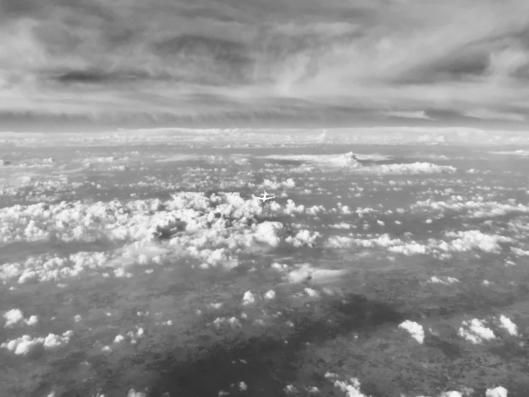
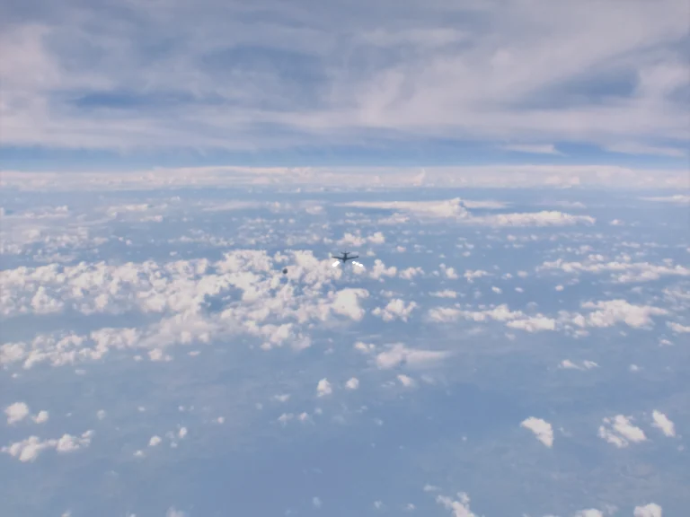
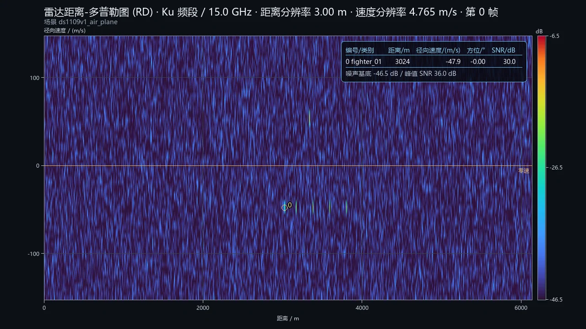

可见光 · PBR 材质 + Cycles
- 目标与背景共用一套 PBR 材质：金属度、粗糙度、法线决定阳光往哪儿反射。
- Cycles 做路径追踪，直接光来自太阳，间接光来自天空穹顶的辐亮度模型。
- 大气按高度剖面衰减，云层与海面按各自的 BRDF 参与多次散射。
- 逐视场自动曝光，把线性辐射量压到 sRGB，再叠加光电子噪声与运动曝光。
- 分辨率随视场变化，标注框由同一套三维投影导出，不手工标。
离线多模态仿真 · 空 / 陆 / 海三域精选
同一帧、同一相机位姿、同一目标：可见光、中波 / 长波红外与毫米波雷达各按自己的物理成像。下面每一组对照都来自同一次仿真落盘的同一帧，不是拼贴素材。
左：可见光 右：所选模态 · 在画面上左右拖动分割线


可见光 中波红外同一帧、同一相机位姿、同一目标。左半边是可见光，右半边是所选模态。
每张卡片配一帧原始落盘图。下面几行说明它为什么长这样，公式从简。

三域精选均用实拍照片作底板：云层里的战机、城市环岛道路上的车辆、开阔海面上的舰船。 每个场景给 5 帧同源的可见光 / 长波红外 / 雷达 RD，点大图放大，点缩略条换帧，点模态按钮切传感器。 含干扰样本的场景以「干扰」标签标出，可在下方干扰实验室里做 clean↔jammed 逐帧对照。
正在载入精选数据…
按干扰类型与强度分层：有源压制、箔条云、假目标、红外诱饵、地 / 海杂波脊。左侧干净帧、右侧干扰帧，拖动分割线看差异；下方给出指标条与强度分层卡片。
JAM LAB · ACTIVE / PASSIVE / CLUTTER链路说明：实线为目标回波主通道，六个节点是注入到同一 RD 通道的干扰 / 杂波项，颜色与下方指标、实体标签一一对应。此示意与说明为纯静态内容，不依赖脚本。
干扰对照数据未载入。JavaScript 执行且数据加载成功后，此处会显示 clean ↔ jammed 拖拽对比；若数据缺失，整块由脚本隐藏。上方链路示意与说明不依赖脚本。
一张 1280×720 的成图，四样东西：距离轴、径向速度轴、dB 色标、目标参数表。
如果视线正俯视一块板面（视线垂直于目标速度），目标相对视线没有投影运动，多普勒频移约等于 0，速度维上只剩一条贴着零速线的亮带——看起来和静止杂波难分。
要读出真实接近率，得换成斜视几何：视线与速度矢量有了夹角 θ，径向速度 vr = v · cosθ 才不为零。上面这张图的读数就来自斜视接近，不是俯视。
同一张图的散斑背景是单通道指数统计，没有 CFAR 门限，也没有距离走动补偿。
能做什么、不能做什么，都照实写。
label:false 落盘，不计入 COCO 标注；images/radar* 含图表叠字，不可作为训练像素。仿真数值为工程近似，用于算法训练与验证，不替代实测标定。